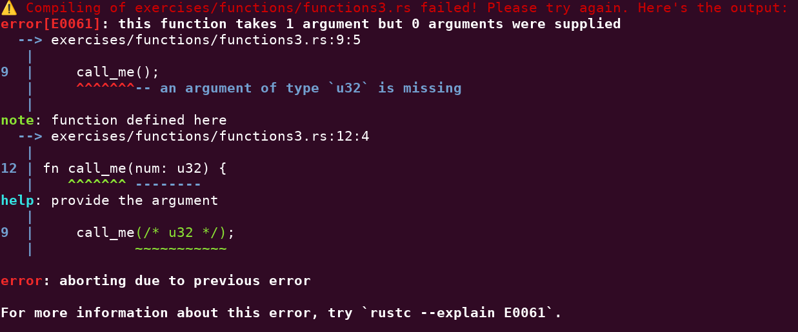

A lesson from every language I’ve used
Throughout the years I’ve used quite a few different languages - if you allow me to be somewhat generous with the word “use”. One language I actually feel proficient in. Some languages I’ve only done coding exercises in. And one language I’ve only used for a total of maybe 10 minutes, but that did really help out a whole team.
I do believe we should be that generous, both towards ourselves and to others. For an industry that likes to talk about imposter syndrome, we seem to enjoy saying “You’re not a real … unless…” a bit too much.
Listing these languages for myself made me wonder what I had learned from them. Did I just learn how to write some code in each of them? Or did I also pick up some more general lessons? Turns out I did.
Perl: languages have a personality.
The Perl motto is “There’s more than one way to do it.”1 and it lives up to that motto. Compare that with Python’s “There should be one— and preferably only one —obvious way to do it.”2 They might be similar in some areas, e.g. both are considered easy to learn scripting languages, using one or the other definitely feels different.
SQL: you don’t need to know all of the language.
My SQL is very limited. I know how to get data from one or more tables. I can sort and group data. I can get distinct values. And that’s about it. The times I’ve added or updated data, or dropped a table, I can probably count on the fingers of one hand.
PHP: sometimes you don’t need to know the language all.
Many years ago I was the lead for testing an enterprise service bus. It wrote its logs to a database, so we used SQL to look up log entries. The end-to-end test team wasn’t comfortable using SQL, so the project’s test automation engineer had built a simple PHP front-end to the logging database.
One day, well after the test automation engineer had left, because they had delivered their framework, the end-to-end team was in a light panic. A new service was available in the service bus, but it was not present in the PHP front-end. No one had an idea how to fix that.
So I asked if someone had the PHP code. I had no idea if I’d be able to do anything, but I figured I could at least look at the code. Luckily the code was short and well-structured. At the top of the file an array of services was defined. I added the new one and the tool was working again.
VBA for Excel: documentation matters.
At one point in my career I had to validate two Excel reports against each other as part of testing an application. There was a third Excel sheet detailing the steps: apply these filters, take the sum of this column, copy-paste the result to this cell, etc. I decided to automate the whole thing, since doing it manually sounded mind-numbingly boring and we had to do this test for every release.
I was surprised how little documentation I could find online. And the help pages from Excel itself were written in a very different style from the documentation of open source projects I was already familiar with. I managed to get the job done, but I did feel a little alone.
Java: it’s not because it’s hidden that it doesn’t happen.
Java is verbose and feels clunky (at least to me). One thing I do appreciate about its verbosity, is that it shows you a lot about what happens in Java. In a less verbose language, those things are either done for you, or not done at all.
Python: language design matters.
I’m a big fan of the list and dictionary comprehension in Python. I really miss them when I’m working in a different language and have to use filter or map instead.
Guido van Rossum, the creator of Python, even proposed to cut Python’s filter() and map() from Python 3. That did not end up happening, but Guido’s post is still a great window into how he thought about what Python should be.
JavaScript: it’s not only about language design.
JavaScript as a language is not great.3 It is widely popular, though. It started in the browser in the ‘90s and by now it’s basically everywhere. It goes to show there’s a lot more to becoming a successful programming language than being well-designed.
Bash: sometimes there isn’t a lesson.
In a previous job I had a laptop running Linux. Mirroring my screen to an external display in meetings was a pain, because scaling didn’t work. So I wrote a Bash script to calculate the correct scaling and apply it through xrandr.
I did enjoy spending some time in Bash, but I’m not really sure I learned anything from it. And while I no longer use a Linux machine at work, I do still use the script on my personal laptop. So it seems the thing I learned the least from, is the thing I’ve had to most use from.
Clojure: things can be different.
Clojure is the odd one out in this list: it’s a functional language and a modern Lisp. Which was also the main reason for me to want to learn Clojure. For example, where Python does 1 + 2 and sum([1, 2, 3]), Clojure does (+ 1 2) and (+ 1 2 3). And that’s just the start of how Clojure does things differently.
TypeScript: design time and run time are not the same.
I never really though much about design time versus run time until encountering TypeScript. Probably because TypeScript doesn’t get compiled or interpreted. It gets transpiled to JavaScript. So you write TypeScript - with all its features and advantages, but when it runs, it’s JavaScript.
Lua: testability matters.
Inspired by workroomprds‘s Black Box Puzzles I built some of my own puzzles for the Playdate. One challenge was how to do linting and unit testing.
Luckily someone had already started adding support to Luacheck for the Playdate SDK. For unit testing, someone from the Playdate team had posted instructions for using LuaUnit. Even then, I had to make sure my code was testable by keeping it separate enough from the Playdate SDK. And the only way to run the unit tests was through the Playdate Simulator.
Rust: compiler errors can be helpful.
Until Rust, error messages from compilers, interpreters, etc. have always been hit-or-miss for me. Sometimes they were clear, sometimes they weren’t, sometimes they were unclear but you knew from experience what the likely problem was.
The Rust compiler wants to do better than that and succeeds:

Not only does it clearly state what the error is and tells me exactly where the error occurred, it tells me what I can do to fix the error.
-
The lightning talk “Wat” by Gary Bernhardt from CodeMash 2012 has some great examples. Skip to 1:21 in the video for the JavaScript weirdness. ↩